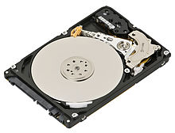
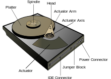
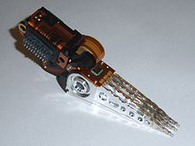

HDD~Hard Disk Drive
A hard disk drive (HDD) is a data storage device used for storing and retrieving digital information using rapidly rotating disks (platters) coated with magnetic material. An HDD retains its data even when powered off. Data is read in a random-access manner, meaning individual blocks of data can be stored or retrieved in any order rather than sequentially. An HDD consists of one or more rigid ("hard") rapidly rotating disks (platters) with magnetic heads arranged on a moving actuator arm to read and write data to the surfaces.
The primary characteristics of an HDD are its capacity and performance. Capacity is specified in unit prefixes corresponding to powers of 1000: a 1-terabyte (TB) drive has a capacity of 1,000 gigabytes (GB; where 1 gigabyte = 1 billion bytes). Typically, some of an HDD's capacity is unavailable to the user because it is used by the file system and the computer operating system, and possibly inbuilt redundancy for error correction and recovery. Performance is specified by the time to move the heads to a file (Average Access Time) plus the time it takes for the file to move under its head (average latency, a function of the physical rotational speed in revolutions per minute) and the speed at which the file is transmitted (data rate).
The two most common form factors for modern HDDs are 3.5-inch in desktop computers and 2.5-inch in laptops. HDDs are connected to systems by standard interface cables such as SATA (Serial ATA), USB or SAS (Serial attached SCSI) cables. As of 2012, the primary competing technology for secondary storage is flash memory in the form of solid-state drives (SSDs). HDDs are expected to remain the dominant medium for secondary storage due to predicted continuing advantages in recording capacity and price per unit of storage; but SSDs are replacing HDDs where speed, power consumption and durability are more important considerations than price and capacity.
Technology
Magnetic recordingAn HDD records data by magnetizing a thin film of ferromagnetic material on a disk. Sequential changes in the direction of magnetization represent binary data bits. The data is read from the disk by detecting the transitions in magnetization. User data is encoded using an encoding scheme, such as run-length limited encoding, which determines how the data is represented by the magnetic transitions. A typical HDD design consists of a spindle that holds flat circular disks, also called platters, which hold the recorded data. The platters are made from a non-magnetic material, usually aluminium alloy, glass, or ceramic, and are coated with a shallow layer of magnetic material typically 10–20 nm in depth, with an outer layer of carbon for protection.For reference, a standard piece of copy paper is 0.07–0.18 millimetres (70,000–180,000 nm).
In modern drives there is one head for each magnetic platter surface on the spindle, mounted on a common arm. An actuator arm (or access arm) moves the heads on an arc (roughly radially) across the platters as they spin, allowing each head to access almost the entire surface of the platter as it spins. The arm is moved using a voice coil actuator or in some older designs a stepper motor. Early hard disk drives wrote data at some constant bits per second, resulting in all tracks having the same amount of data per track but modern drives (since the 1990s) use zone bit recording—increasing the write speed from inner to outer zone and thereby storing more data per track in the outer zones.
In modern drives, the small size of the magnetic regions creates the danger that their magnetic state might be lost because of thermal effects. To counter this, the platters are coated with two parallel magnetic layers, separated by a 3-atom layer of the non-magnetic element ruthenium, and the two layers are magnetized in opposite orientation, thus reinforcing each other.Another technology used to overcome thermal effects to allow greater recording densities is perpendicular recording, first shipped in 2005, and as of 2007 the technology was used in many HDDs.
ComponentsA typical HDD has two electric motors; a spindle motor that spins the disks and an actuator (motor) that positions the read/write head assembly across the spinning disks. The disk motor has an external rotor attached to the disks; the stator windings are fixed in place. Opposite the actuator at the end of the head support arm is the read-write head; thin printed-circuit cables connect the read-write heads to amplifier electronics mounted at the pivot of the actuator. The head support arm is very light, but also stiff; in modern drives, acceleration at the head reaches 550 g. 
The actuator is a permanent magnet and moving coil motor that swings the heads to the desired position. A metal plate supports a squat neodymium-iron-boron (NIB) high-flux magnet. Beneath this plate is the moving coil, often referred to as the voice coil by analogy to the coil in loudspeakers, which is attached to the actuator hub, and beneath that is a second NIB magnet, mounted on the bottom plate of the motor (some drives only have one magnet).
The voice coil itself is shaped rather like an arrowhead, and made of doubly coated copper magnet wire. The inner layer is insulation, and the outer is thermoplastic, which bonds the coil together after it is wound on a form, making it self-supporting. The portions of the coil along the two sides of the arrowhead (which point to the actuator bearing center) interact with the magnetic field, developing a tangential force that rotates the actuator. Current flowing radially outward along one side of the arrowhead and radially inward on the other produces the tangential force. If the magnetic field were uniform, each side would generate opposing forces that would cancel each other out. Therefore the surface of the magnet is half N pole, half S pole, with the radial dividing line in the middle, causing the two sides of the coil to see opposite magnetic fields and produce forces that add instead of canceling. Currents along the top and bottom of the coil produce radial forces that do not rotate the head.
Performance characteristics
Time to access dataThe factors that limit the time to access the data on an HDD are mostly related to the mechanical nature of the rotating disks and moving heads. Seek time is a measure of how long it takes the head assembly to travel to the track of the disk that contains data. Rotational latency is incurred because the desired disk sector may not be directly under the head when data transfer is requested. These two delays are on the order of milliseconds each. The bit rate or data transfer rate (once the head is in the right position) creates delay which is a function of the number of blocks transferred; typically relatively small, but can be quite long with the transfer of large contiguous files. Delay may also occur if the drive disks are stopped to save energy.
An HDD's Average Access Time is its average Seek time which technically is the time to do all possible seeks divided by the number of all possible seeks, but in practice is determined by statistical methods or simply approximated as the time of a seek over one-third of the number of tracks.
Defragmentation is a procedure used to minimize delay in retrieving data by moving related items to physically proximate areas on the disk. Some computer operating systems perform defragmentation automatically. Although automatic defragmentation is intended to reduce access delays, performance will be temporarily reduced while the procedure is in progress.
Time to access data can be improved by increasing rotational speed (thus reducing latency) and/or by reducing the time spent seeking. Increasing areal density increases throughput by increasing data rate and by increasing the amount of data under a set of heads, thereby potentially reducing seek activity for a given amount of data. Based on historic trends, analysts predict a future growth in HDD areal density (and therefore capacity) of about 40% per year. The time to access data has not kept up with throughput increases, which themselves have not kept up with growth in storage capacity.
Seek timeAverage seek time ranges from under 4 ms for high-end server drives to 15 ms for mobile drives, with the most common mobile drives at about 12 ms and the most common desktop type typically being around 9 ms. The first HDD had an average seek time of about 600 ms; by the middle of 1970s HDDs were available with seek times of about 25 ms. Some early PC drives used a stepper motor to move the heads, and as a result had seek times as slow as 80–120 ms, but this was quickly improved by voice coil type actuation in the 1980s, reducing seek times to around 20 ms. Seek time has continued to improve slowly over time.
Some desktop and laptop computer systems allow the user to make a tradeoff between seek performance and drive noise. Faster seek rates typically require more energy usage to quickly move the heads across the platter, causing louder noises from the pivot bearing and greater device vibrations as the heads are rapidly accelerated during the start of the seek motion and decelerated at the end of the seek motion. Quiet operation reduces movement speed and acceleration rates, but at a cost of reduced seek performance.
Data transfer rateAs of 2010, a typical 7,200-rpm desktop HDD has a sustained "disk-to-buffer" data transfer rate up to 1,030 Mbits/sec. This rate depends on the track location; the rate is higher for data on the outer tracks (where there are more data sectors per rotation) and lower toward the inner tracks (where there are fewer data sectors per rotation); and is generally somewhat higher for 10,000-rpm drives. A current widely used standard for the "buffer-to-computer" interface is 3.0 Gbit/s SATA, which can send about 300 megabyte/s (10-bit encoding) from the buffer to the computer, and thus is still comfortably ahead of today's disk-to-buffer transfer rates. Data transfer rate (read/write) can be measured by writing a large file to disk using special file generator tools, then reading back the file. Transfer rate can be influenced by file system fragmentation and the layout of the files.
HDD data transfer rate depends upon the rotational speed of the platters and the data recording density. Because heat and vibration limit rotational speed, advancing density becomes the main method to improve sequential transfer rates. Higher speeds require more power absorbed by the electric engine, which hence warms up more. While areal density advances by increasing both the number of tracks across the disk and the number of sectors per track, only the latter increases the data transfer rate for a given rpm. Since data transfer rate performance only tracks one of the two components of areal density, its performance improves at a lower rate